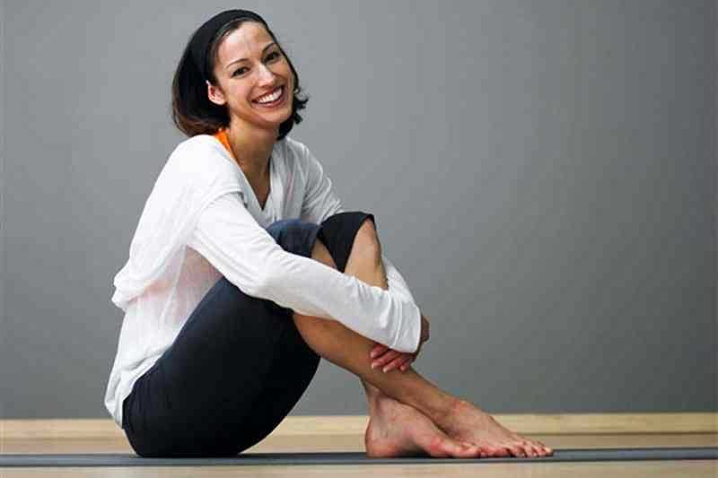

Pengertian Olahraga: Pengertian, Manfaat, Macam dan Cabang
2021.03.24 18:32

Skip to content MENU BERANDA SD SMP SMA SMK S1 S2 S3 UMUM Tutup Menu
Pengertian Olahraga
Oleh Pak Alex Diposting pada Januari 3, 2021
Pada Kesempatan Kali ini pengajar.co.id ingin membagikan artikel tentang Pengertian Olahraga Berikut adalah pembahasannya:
Pengertian Olahraga
Baca Cepat Tampilkan 1. Pengertian Olahraga 2. Manfaat Olahraga 3. Macam-Macam Cabang Olahraga Olimpiade 4. 1. Atletik 5. 2. Permainan Bola 6. 3. Seni Bela Diri 7. 4. Berenang 8. Sebarkan ini:
Olahraga adalah aktivitas yang mempunyai tujuan tertentu, seperti halnya melatih tubuh untuk kesehatan jasmani ataupun rohani. Jadi olahraga yang rutin bisa mempunyai manfaat untuk menjaga kesehatan tubuh. Dikarenakan metabolisme dalam tubuh bisa berjalan lancar.
Dengan begitu, penyerapan serta distribusi nutrisi bisa bekerja dengan efektif dan efisien. Jadi pengertian Olahraga secara umum adalah sebuah bentuk aktivitas fisik yang terencana dan terstruktur, yang mana melibatkan gerakan tubuh secara berulang-ulang untuk mendapatkan hasil yang baik.
Dengan tujuan untuk peningkatan kebugaran jasmani ataupun rohani tiap manusia. Olahraga juga dapat dilakukan oleh orang dewasa, anak-anak, sampai lanjut usia selagi dia mampu. Olahraga juga sudah menjadi bagian hidup dari sebagian masyarakat perkotaan ataupun pedesaan.
Manfaat Olahraga
Olahraga juga mempunyai manfaat untuk seseorang. Manfaat olahraga itu yang bisa membantu seseorang untuk lebih percaya diri, memperlancar peredaran darah, meningkatkan kinerja otak secara maksimal guna mendapat hasil konsentrasi yang baik. Sebab suplai oksigen menuju otak bisa beredar secara lancar.
Selanjutnya, tujuan dari Olahraga sendiri sangat banyak. Sampai mengeluarkan berbagai pengertian olahraga yang sangat luas. Serta banyak yang menganggap bahwa olahraga hanya sebagai hobi, mempercepat proses diet, serta keinginan membentuk otot tubuh. Dan juga sekedar bermain. Tapi, olahraga sendiri akan berbuah manis kalau seseorang melakukannya dengan rutin dan dalam terarah untuk mengikuti PORKAB, PORPROV, PON, SEA GAMES, dsb.
Lihat Juga: Kloning Adalah
Macam-Macam Cabang Olahraga Olimpiade
1. Atletik
Olahraga ini adalah olahraga gabungan dari bermacam jenis olahraga yang dikelompokkan menjadi satu. Yakni olahraga lari, lompat dan lempar. Contoh olahraga atletik sendiri adalah lari jarah pendek, lari jarak menengah, lari maraton, tolak peluru, lempar lembing, lompat tinggi serta masih banyak lagi.
2. Permainan Bola
Untuk permainan bola yang di Olimpiadekan ialah permainan bola besar dan bola kecil. Permainan bola besar adalah bola basket, bola voli, futsal, golf, sofbol, tennis lapangan, boling, sepak bola, bola tangan dsb.
Permain bola, pada era ini tidak hanya disukai oleh kaum laki-laki saja. Namun, kaum perempuan juga juga banyak yang gemar bermain bola. Contoh bola basket, bola volli, bola tangan, tennis lapangan adalah contoh olahraga yang digemari oleh kaum perempuan. Sampai kini banyak perempuan yang menjuarai olahraga bola tersebut.
3. Seni Bela Diri
Cabang olahraga seni beladiri sekarang semakin menjadi idola baru dalam cabang Olahraga. Kemunculan untuk mempertahankan nilai seni dari bermacam daerah dapat berkembang dengan aktivitas dari adanya olahraga bela diri. Dari masa ke masa, seni bela diri tersebar ke semua penjuru dunia dan mempunyai ciri khas masing-masing.
Seperti halnya silat, bela diri silat ialah olahraga yang dikembangkan di Indonesia. Olahraga yang di perlombakan dalam tingkat Olimpiade ini mesti berkembang dan bersaing secara positif bersama seni beladiri aikido, judo, wushu, karate, gulat, kempo, wing tsun, serta taekwondo.
4. Berenang
Olahraga air ini, adalah cabang olahraga yang dilakukan di dalam air. Kompetisi tersebut selalu dimasukkan dalam segala pertandingan. Kelas renang yang biasa diperlombakan yakni gaya dada, gaya bebas, gaya punggung, dan gaya kupu-kupu. Nantinya olahraga tersebut akan diperlombakan secara acak, sesuai dengan kecepatan waktu yang di tempuh.
Lihat Juga: √ Bullying Adalah
Itulah macam-macam cabang Olahraga Olimpiade yang dipertandingkan pada semua kejuaraan yang ada. Dengan dibantunya pengurus pada setiap cabornya (cabang olahraga) membantu seseorang guna memilih bidang olahraga yang sesuai dengan kemampuan yang dipunyai masing-masing manusia.
Demikianlah artikel dari pengajar.co.id tentang Pengertian Olahraga Semoga Dapat Bermanfaat bagi kita semua!
Sebarkan ini:
Facebook Twit WhatsApp Posting pada S1 , SD , SMA , SMK , SMP , UMUM Ditag apakah manfaat berolahraga bagi tubuh kita , berolahraga kbbi , definisi olahraga kbbi , fungsi olahraga , jenis olahraga , jenis-jenis olahraga dan contohnya , jurnal olahraga pdf , kaitan antara sehat bugar dan olahraga , kaitan sehat bugar dan olahraga , kebugaran jasmani adalah , kesehatan adalah , latar belakang olahraga , macam olahraga , makalah manfaat olahraga bagi kesehatan , makalah tentang olahraga , manfaat berdiri dengan satu kaki , manfaat berolahraga , manfaat olahraga , manfaat olahraga bagi anak , manfaat olahraga bagi wanita , manfaat olahraga brainly , manfaat olahraga pdf , manfaat olahraga untuk kecantikan , musik adalah , olahraga adalah pdf , olahraga kbbi , olahraga prestasi adalah , olahraga tradisional adalah , olahraga tradisional indonesia , olahraga wikipedia , pengertian istirahat yang cukup , pengertian kesehatan , pengertian olahraga , pengertian olahraga menurut para ahli , pengertian olahraga menurut para ahli pdf , pengertian pendidikan olahraga , pengertian seni menurut para ahli , s. si , suryanto rukmono , teknik dasar bola basket , tujuan meningkatkan kebugaran jasmani , tujuan olahraga
Artikel Terbaru
Desain Adalah Kerajaan Majapahit Kerajaan Mataram Islam Arsip Adalah KineMaster Pro Apk Administrasi Kearsipan Adalah Kalimat Tunggal Adalah Sifat Koligatif Larutan Makalah Adalah Kerajaan Demak √Atom JJ Thomson √Remunerasi Adalah Download Link Video Bokeh Museum √Biosfer Adalah √Tata Surya
Pilihan Editor
Download Kinemaster Pro Download Link Video Bokeh Museum Created By : Pengajar.Co.ID | 2018
Berita Olahraga Terbaru Hari ini 3. Olahraga Tenis Tenis merupakan olahraga yang dimainkan antara dua pemain atau antara dua pasangan (masing- masing dua pemain) yang saling berlawanan. Setiap pemain menggunakan raket untuk memukul bola karet. Tenis adalah salah satu cabang olahraga yang dipertandingkan dalam Olimpiade. Tenis dimainkan pada semua tingkat masyarakat di segala usia.
Jual Peralatan Olahraga Murah - Harga Terbaru 2021 Olahraga aerobik dapat dilakukan minimal 10 menit. Olahraga aerobik atau kardio ini contohnya seperti menggunakan treadmill, berlari, berenang, zumba, atau senam aerobik. Olahraga aerobik ini yang akan membantu meningkatkan fungsi jantung dan membuat aliran darah semakin lancar.
Informasi Terlengkap Tentang Olahraga | Halodoc.com Olahraga Air-Di dalam kehidupan sehari-hari mungkin tidak asing lagi dengan yang namanya olahraga.Olahraga adalah salah satu kebutuhan di dalam kehidupan kita, dengan berolahraga lemak yang ada dalam tubuh akan terbakar. Selain itu, berolahraga juga dapat menambah kekebalan dan kebugaran tubuh.
30+ Macam-Macam Olahraga & Penjelasannya Serta Gambarnya ... Olahraga pada masyarakat kuno adalah untuk menciptakan kekuatan dan pengembangan kesadaran kelompok, yang dilakukan oleh keluarga. Pada masyarakat ini olahraga merupakan sport utility maksudnya gerakan yang dilakukan adalah semacam olahraga namun fungsinya untuk mempertahankan diri untuk kelangsungan hidup.
10 Jenis Olahraga Kardio untuk Bakar Lemak dan Kecilkan Perut! Ada banyak sekali manfaat olahraga yang diperoleh tubuh jika rutin dilakukan. Sebaiknya, olahraga dilakukan setiap hari minimal 30 menit. Tidak perlu melakukan olahraga berat untuk bisa mendapatkan manfaatnya, cukup yang ringan saja, seperti jalan kaki atau joging pada pagi hari.
Pengertian Olahraga: Pengertian, Manfaat, Macam dan Cabang Download gratis Olahraga PowerPoint template dan latar belakang untuk presentasi termasuk sepak bola dan sepak bola olahraga serta geser olahraga lainnya desain siap untuk digunakan dalam presentasi PowerPoint Anda. Gratis olahraga PPT template yang kompatibel dengan Microsoft PowerPoint 2010 dan 2013.
Berapa Kali Olahraga Dalam Seminggu yang Ideal Bagi Tubuh? Olahraga kardio terbaik yang satu ini tak hanya bermanfaat untuk membakar lemak secara cepat, jumping lunges akan membuat massa otot terutama di area pantat dan kaki makin kuat. Jumping lunges menjadi gabungan latihan kardio dan pembentukan tubuh yang patut kamu coba jika ingin memiliki area bawah tubuh lebih terbentuk seksi.